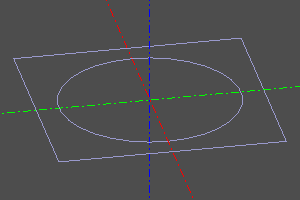
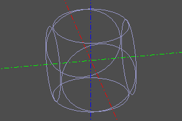
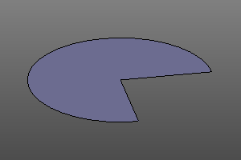
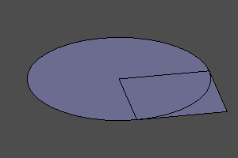
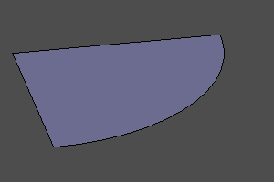
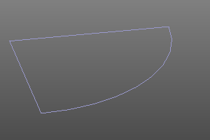

Булевы операции и сечения.
CSG геометрия операется на булевы операции. В zencad представлены операции объединения, вычитания и пересечения 3д объектов. В zencad есть два способа выполнения этих операций:
- над массивами тел с помощью функций
union,difference,intersect - над парами тел с помощью операторов
+-^
Объединение тел.
#with operators:
sphere(r=10) + cylinder(r=5, h=10, center=True) + cylinder(r=5, h=10, center=True).rotateX(deg(90))
#with function:
union([
sphere(r=10),
cylinder(r=5, h=10, center=True),
cylinder(r=5, h=10, center=True).rotateX(deg(90))
])


Вычитание тел.
#with operators:
sphere(r=10) - cylinder(r=5, h=10, center=True) - cylinder(r=5, h=10, center=True).rotateX(deg(90))
#with function:
difference([
sphere(r=10),
cylinder(r=5, h=10, center=True),
cylinder(r=5, h=10, center=True).rotateX(deg(90))
])


Пересечение тел.
#with operators:
sphere(r=10) ^ cylinder(r=5, h=10, center=True) ^ cylinder(r=5, h=10, center=True).rotateX(deg(90))
#with function:
intersect([
sphere(r=10),
cylinder(r=5, h=10, center=True),
cylinder(r=5, h=10, center=True).rotateX(deg(90))
])


Сечения.
Поиск рёбер пересечения пары тел.
Операция section похожа на intersect, только результатом является не твердое тело, а рёбра пересечений.
section(a, b=0)
Аргументы a и b - пересекаемые тела. Если один из аргументов действительное число или вектор, то на основе этого параметра строится тело в виде плоскости пересечения.
Пример. Пересечение оболочек разности куба и сферы горизонтальной плоскостью.
body = box(10, center=True) - sphere(4)
sect = section(body)

Пример. Пересечение оболочек куба и сферы.
a = box(10, center=True)
b = sphere(7)
sect = section(a, b)

Булевы операции над двумерными телами.
Точно также как и к трёхмерным объектам, перечисленные выше операции могут применяться к двумерным объектам до тех пор, пока они находятся в одной плоскости.
Пример:
m0 = sphere(10) - square(10)
m1 = sphere(10) + square(10)
m2 = sphere(10) ^ square(10)
m2 = section(sphere(10), square(10))



